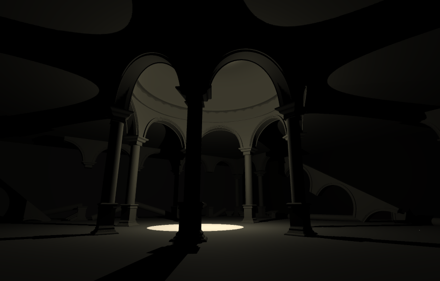

This was my first project of the semester. I chose to use the ideas of Ma and Wabi-Sabi. I was most interested in the ideas of light passing through a door and how the emptiness between the cracks allows room for growth. I was also interested in the ideas of imperfection, impermanence and shadow from the philosophy on Wabi-Sabi. I was inspired by works from the artist Tadao Ando where simple architectural works use shadow which draws more attention and contemplation to the light that is allowed in. These works reminded me of other architectural works that although from different cultures, use similar principles. These architectural works are subterranean so when they were built it would have been hard to light. They use openings in the top to allow natural light to pass through and illuminate the internal structure.
I wanted to build an architectural work that was in the same spirit as these ones. I would create a simple structure that utilises a small amount of light to create interesting shadows. I am also the most familiar with Western architecture so I decided to use Western columns and arches.
However, my project ended up being more inspired by ideas I admired rather than something that tried to say anything with those ideas like it was supposed to.